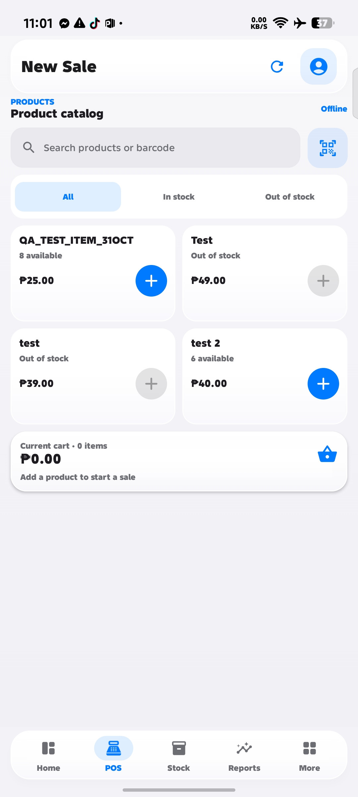
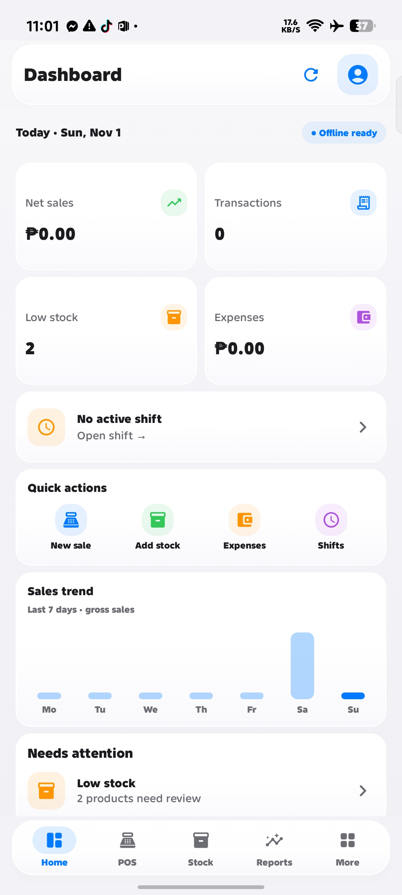
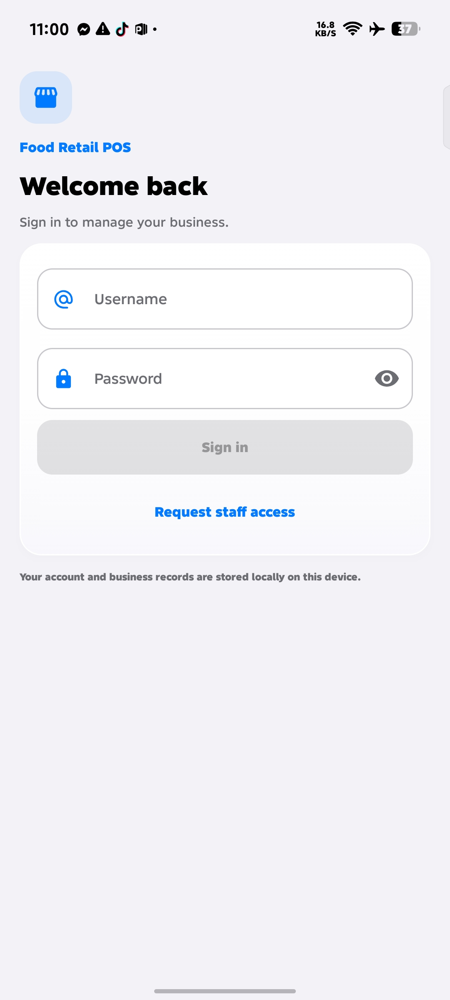
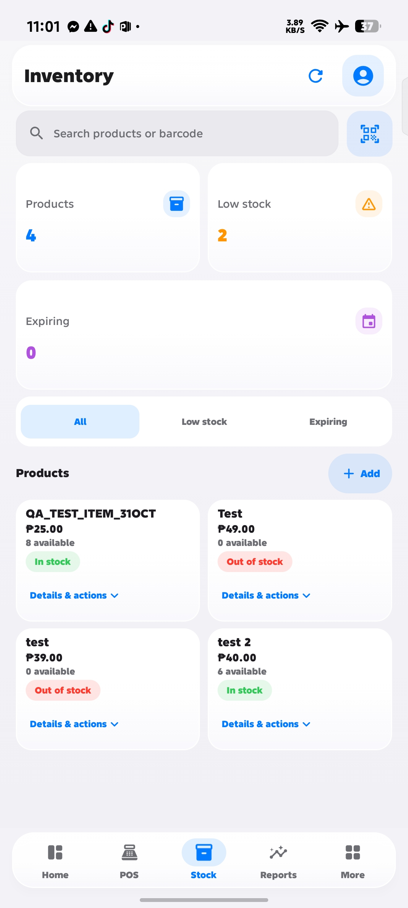
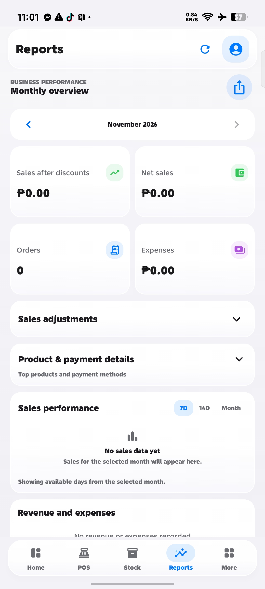
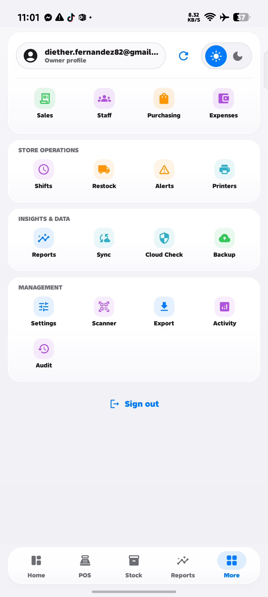

Search products, manage the cart, and record sales.
Made for everyday retail
Your store.
In your hands.
A thoughtfully designed Android point of sale for selling, managing inventory, and understanding your business — even offline.


Built for your business
Everything in its place.
From checkout to end-of-day reporting, essential store operations in one app.
Track stock levels, low-stock items, and expiry alerts.
Review revenue, expenses, and performance.
Keep core records on your device and operate without a constant connection.
Manage shifts, access, and operational activity.
Receipt printing, barcode scanning, backup, and export workflows.
Actual Android app
See the workflow.
Explore six screens from the Food Retail POS app.

01. Sign inSecure access.
02. Dashboard
Daily overview.
03. New sale
Products and cart.

04. InventoryStock at a glance.

05. ReportsBusiness performance.

06. MoreOperations and settings.
The daily flow
Simple from start to finish.
A practical way to run your shop, without unnecessary complexity.
Sign in
Open your account, check stock, and prepare for the day.
Make a sale
Search or scan products, add to cart, and check out.
Manage stock
Review quantities and restock items when needed.
See the results
Check reports, expenses, and shift activity.
For people behind the counter
Less admin.
More selling.
Retail tools designed to stay out of your way.
Explore the project ↗